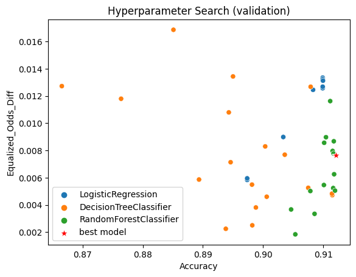

[1]:
import os
import numpy as np
N_SAMPLES = int(10**5)
RANDOM_SEED = 42
rng = np.random.RandomState(RANDOM_SEED)
[2]:
from sklearn.datasets import make_classification
def generate_data(num_samples, prevalence=0.5, sensitive_prevalence=0.1, random_seed=42):
# Generate features and labels with scikit-learn
X, Y = make_classification(num_samples, weights=(1-prevalence, prevalence), random_state=random_seed)
# Sensitive attrs
rng = np.random.RandomState(random_seed)
S = (rng.random(num_samples) + sensitive_prevalence).astype(int)
return X, Y, S
[3]:
X, Y, S = generate_data(num_samples=N_SAMPLES, random_seed=rng.randint(10**10))
[4]:
# Split train, test
test_size = 0.2
indices = rng.permutation(N_SAMPLES)
test_indices = indices[: int(test_size * N_SAMPLES)]
train_indices = indices[int(test_size * N_SAMPLES): ]
X_train, y_train, s_train = X[train_indices], Y[train_indices], S[train_indices]
X_test, y_test, s_test = X[test_indices], Y[test_indices], S[test_indices]
Use hpt package to train models
[5]:
from pathlib import Path
HYPERPARAM_SPACE_PATH = Path() / 'hyperparameter_spaces'
HYPERPARAM_SPACE_PATH = HYPERPARAM_SPACE_PATH / 'sklearn.multiple_algorithms.yaml'
[6]:
from hpt.tuner import ObjectiveFunction, OptunaTuner
obj_func = ObjectiveFunction(
X_train, y_train, X_test, y_test,
hyperparameter_space=HYPERPARAM_SPACE_PATH,
eval_metric='accuracy',
s_train=s_train,
s_val=s_test,
threshold=0.50,
alpha=1.0, # optimize only performance metric (`eval_metric='accuracy'`)
other_eval_metric='equalized_odds_diff', # but still evaluate fairness metric results
)
tuner = OptunaTuner(obj_func) # NOTE: can pass other useful study kwargs here (e.g. storage)
[I 2023-09-05 13:38:51,722] A new study created in memory with name: no-name-b114ffeb-ad7e-4fc9-ac56-d6be007b64be
[7]:
%%time
tuner.optimize(n_trials=50, show_progress_bar=True, n_jobs=os.cpu_count())
WARNING:root:Can't figure out how to use sensitive_attribute data for training with object of type '<class 'sklearn.linear_model._logistic.LogisticRegression'>'.
[I 2023-09-05 13:38:51,852] Trial 0 finished with value: 0.9099 and parameters: {'learner_type': 'LR', 'learner_LR_penalty': 'l2', 'learner_LR_C': 0.01, 'learner_LR_tol': 9.658116684018327e-05, 'learner_LR_max_iter': 145, 'learner_LR_solver': 'liblinear'}. Best is trial 0 with value: 0.9099.
[I 2023-09-05 13:38:51,979] Trial 2 finished with value: 0.89735 and parameters: {'learner_type': 'LR', 'learner_LR_penalty': 'l2', 'learner_LR_C': 1e-05, 'learner_LR_tol': 7.820718867973598e-05, 'learner_LR_max_iter': 78, 'learner_LR_solver': 'liblinear'}. Best is trial 0 with value: 0.9099.
[I 2023-09-05 13:38:52,157] Trial 3 finished with value: 0.9099 and parameters: {'learner_type': 'LR', 'learner_LR_penalty': 'l2', 'learner_LR_C': 0.01, 'learner_LR_tol': 9.977866701242914e-05, 'learner_LR_max_iter': 490, 'learner_LR_solver': 'liblinear'}. Best is trial 0 with value: 0.9099.
[I 2023-09-05 13:38:52,162] Trial 7 finished with value: 0.89735 and parameters: {'learner_type': 'LR', 'learner_LR_penalty': 'l2', 'learner_LR_C': 1e-05, 'learner_LR_tol': 0.00029046640022955015, 'learner_LR_max_iter': 230, 'learner_LR_solver': 'liblinear'}. Best is trial 0 with value: 0.9099.
[I 2023-09-05 13:38:52,170] Trial 5 finished with value: 0.9099 and parameters: {'learner_type': 'LR', 'learner_LR_penalty': 'l2', 'learner_LR_C': 0.01, 'learner_LR_tol': 0.00044324589483900253, 'learner_LR_max_iter': 253, 'learner_LR_solver': 'liblinear'}. Best is trial 0 with value: 0.9099.
[I 2023-09-05 13:38:52,220] Trial 8 finished with value: 0.90335 and parameters: {'learner_type': 'LR', 'learner_LR_penalty': 'l2', 'learner_LR_C': 0.0001, 'learner_LR_tol': 8.250266673984556e-05, 'learner_LR_max_iter': 2043, 'learner_LR_solver': 'liblinear'}. Best is trial 0 with value: 0.9099.
[I 2023-09-05 13:38:52,229] Trial 4 finished with value: 0.9083 and parameters: {'learner_type': 'LR', 'learner_LR_penalty': 'l2', 'learner_LR_C': 0.001, 'learner_LR_tol': 0.007480056190151736, 'learner_LR_max_iter': 331, 'learner_LR_solver': 'liblinear'}. Best is trial 0 with value: 0.9099.
[I 2023-09-05 13:38:52,434] Trial 13 finished with value: 0.9099 and parameters: {'learner_type': 'LR', 'learner_LR_penalty': 'l2', 'learner_LR_C': 0.01, 'learner_LR_tol': 0.000919815910884721, 'learner_LR_max_iter': 225, 'learner_LR_solver': 'liblinear'}. Best is trial 0 with value: 0.9099.
[I 2023-09-05 13:38:55,322] Trial 12 finished with value: 0.9115 and parameters: {'learner_type': 'DT', 'learner_DT_max_depth': 5, 'learner_DT_criterion': 'entropy', 'learner_DT_min_samples_split': 4, 'learner_DT_min_samples_leaf': 7, 'learner_DT_splitter': 'best'}. Best is trial 12 with value: 0.9115.
[I 2023-09-05 13:38:55,556] Trial 18 finished with value: 0.89735 and parameters: {'learner_type': 'LR', 'learner_LR_penalty': 'l2', 'learner_LR_C': 1e-05, 'learner_LR_tol': 0.0007496310261291808, 'learner_LR_max_iter': 148, 'learner_LR_solver': 'liblinear'}. Best is trial 12 with value: 0.9115.
[I 2023-09-05 13:38:55,835] Trial 17 finished with value: 0.9115 and parameters: {'learner_type': 'DT', 'learner_DT_max_depth': 5, 'learner_DT_criterion': 'entropy', 'learner_DT_min_samples_split': 7, 'learner_DT_min_samples_leaf': 7, 'learner_DT_splitter': 'best'}. Best is trial 12 with value: 0.9115.
[I 2023-09-05 13:38:58,377] Trial 16 finished with value: 0.9075 and parameters: {'learner_type': 'DT', 'learner_DT_max_depth': 147, 'learner_DT_criterion': 'gini', 'learner_DT_min_samples_split': 15, 'learner_DT_min_samples_leaf': 74, 'learner_DT_splitter': 'best'}. Best is trial 12 with value: 0.9115.
[I 2023-09-05 13:38:58,760] Trial 11 finished with value: 0.8938 and parameters: {'learner_type': 'DT', 'learner_DT_max_depth': 15, 'learner_DT_criterion': 'gini', 'learner_DT_min_samples_split': 8, 'learner_DT_min_samples_leaf': 2, 'learner_DT_splitter': 'best'}. Best is trial 12 with value: 0.9115.
[I 2023-09-05 13:38:59,282] Trial 10 finished with value: 0.89815 and parameters: {'learner_type': 'DT', 'learner_DT_max_depth': 148, 'learner_DT_criterion': 'gini', 'learner_DT_min_samples_split': 41, 'learner_DT_min_samples_leaf': 24, 'learner_DT_splitter': 'best'}. Best is trial 12 with value: 0.9115.
[I 2023-09-05 13:38:59,889] Trial 15 finished with value: 0.8988 and parameters: {'learner_type': 'DT', 'learner_DT_max_depth': 17, 'learner_DT_criterion': 'gini', 'learner_DT_min_samples_split': 87, 'learner_DT_min_samples_leaf': 2, 'learner_DT_splitter': 'best'}. Best is trial 12 with value: 0.9115.
[I 2023-09-05 13:39:01,551] Trial 24 finished with value: 0.90465 and parameters: {'learner_type': 'RF', 'learner_RF_n_estimators': 16, 'learner_RF_max_depth': 6, 'learner_RF_criterion': 'gini', 'learner_RF_min_samples_split': 93, 'learner_RF_min_samples_leaf': 3, 'learner_RF_max_features': 'sqrt'}. Best is trial 12 with value: 0.9115.
[I 2023-09-05 13:39:01,943] Trial 6 finished with value: 0.8764 and parameters: {'learner_type': 'DT', 'learner_DT_max_depth': 39, 'learner_DT_criterion': 'gini', 'learner_DT_min_samples_split': 4, 'learner_DT_min_samples_leaf': 5, 'learner_DT_splitter': 'best'}. Best is trial 12 with value: 0.9115.
[I 2023-09-05 13:39:03,247] Trial 23 finished with value: 0.91145 and parameters: {'learner_type': 'DT', 'learner_DT_max_depth': 5, 'learner_DT_criterion': 'entropy', 'learner_DT_min_samples_split': 17, 'learner_DT_min_samples_leaf': 77, 'learner_DT_splitter': 'best'}. Best is trial 12 with value: 0.9115.
[I 2023-09-05 13:39:04,824] Trial 19 finished with value: 0.8851 and parameters: {'learner_type': 'DT', 'learner_DT_max_depth': 134, 'learner_DT_criterion': 'entropy', 'learner_DT_min_samples_split': 31, 'learner_DT_min_samples_leaf': 2, 'learner_DT_splitter': 'best'}. Best is trial 12 with value: 0.9115.
[I 2023-09-05 13:39:05,287] Trial 28 finished with value: 0.90995 and parameters: {'learner_type': 'LR', 'learner_LR_penalty': 'l2', 'learner_LR_C': 0.1, 'learner_LR_tol': 9.018047173931659e-05, 'learner_LR_max_iter': 91, 'learner_LR_solver': 'liblinear'}. Best is trial 12 with value: 0.9115.
[I 2023-09-05 13:39:05,742] Trial 20 finished with value: 0.8943 and parameters: {'learner_type': 'DT', 'learner_DT_max_depth': 91, 'learner_DT_criterion': 'gini', 'learner_DT_min_samples_split': 6, 'learner_DT_min_samples_leaf': 16, 'learner_DT_splitter': 'best'}. Best is trial 12 with value: 0.9115.
[I 2023-09-05 13:39:06,365] Trial 30 finished with value: 0.9099 and parameters: {'learner_type': 'LR', 'learner_LR_penalty': 'l2', 'learner_LR_C': 0.1, 'learner_LR_tol': 0.001232757989464645, 'learner_LR_max_iter': 772, 'learner_LR_solver': 'liblinear'}. Best is trial 12 with value: 0.9115.
[I 2023-09-05 13:39:07,989] Trial 21 finished with value: 0.8946 and parameters: {'learner_type': 'DT', 'learner_DT_max_depth': 15, 'learner_DT_criterion': 'entropy', 'learner_DT_min_samples_split': 4, 'learner_DT_min_samples_leaf': 8, 'learner_DT_splitter': 'best'}. Best is trial 12 with value: 0.9115.
[I 2023-09-05 13:39:09,183] Trial 27 finished with value: 0.9006 and parameters: {'learner_type': 'DT', 'learner_DT_max_depth': 37, 'learner_DT_criterion': 'gini', 'learner_DT_min_samples_split': 16, 'learner_DT_min_samples_leaf': 26, 'learner_DT_splitter': 'best'}. Best is trial 12 with value: 0.9115.
[I 2023-09-05 13:39:13,252] Trial 22 finished with value: 0.90785 and parameters: {'learner_type': 'RF', 'learner_RF_n_estimators': 148, 'learner_RF_max_depth': 6, 'learner_RF_criterion': 'gini', 'learner_RF_min_samples_split': 19, 'learner_RF_min_samples_leaf': 5, 'learner_RF_max_features': 'sqrt'}. Best is trial 12 with value: 0.9115.
[I 2023-09-05 13:39:16,732] Trial 33 finished with value: 0.91045 and parameters: {'learner_type': 'RF', 'learner_RF_n_estimators': 13, 'learner_RF_max_depth': 48, 'learner_RF_criterion': 'gini', 'learner_RF_min_samples_split': 91, 'learner_RF_min_samples_leaf': 38, 'learner_RF_max_features': 'sqrt'}. Best is trial 12 with value: 0.9115.
[I 2023-09-05 13:39:16,957] Trial 35 finished with value: 0.89735 and parameters: {'learner_type': 'LR', 'learner_LR_penalty': 'l2', 'learner_LR_C': 1e-05, 'learner_LR_tol': 0.000362871828193693, 'learner_LR_max_iter': 209, 'learner_LR_solver': 'liblinear'}. Best is trial 12 with value: 0.9115.
[I 2023-09-05 13:39:25,170] Trial 32 finished with value: 0.9079 and parameters: {'learner_type': 'DT', 'learner_DT_max_depth': 49, 'learner_DT_criterion': 'entropy', 'learner_DT_min_samples_split': 21, 'learner_DT_min_samples_leaf': 59, 'learner_DT_splitter': 'best'}. Best is trial 12 with value: 0.9115.
[I 2023-09-05 13:39:25,526] Trial 37 finished with value: 0.89735 and parameters: {'learner_type': 'LR', 'learner_LR_penalty': 'l2', 'learner_LR_C': 1e-05, 'learner_LR_tol': 0.000530259062154841, 'learner_LR_max_iter': 671, 'learner_LR_solver': 'liblinear'}. Best is trial 12 with value: 0.9115.
[I 2023-09-05 13:39:28,477] Trial 34 finished with value: 0.91115 and parameters: {'learner_type': 'RF', 'learner_RF_n_estimators': 56, 'learner_RF_max_depth': 27, 'learner_RF_criterion': 'gini', 'learner_RF_min_samples_split': 10, 'learner_RF_min_samples_leaf': 68, 'learner_RF_max_features': 'log2'}. Best is trial 12 with value: 0.9115.
[I 2023-09-05 13:39:30,402] Trial 38 finished with value: 0.91015 and parameters: {'learner_type': 'RF', 'learner_RF_n_estimators': 14, 'learner_RF_max_depth': 10, 'learner_RF_criterion': 'entropy', 'learner_RF_min_samples_split': 35, 'learner_RF_min_samples_leaf': 78, 'learner_RF_max_features': 'sqrt'}. Best is trial 12 with value: 0.9115.
[I 2023-09-05 13:39:33,333] Trial 36 finished with value: 0.9036 and parameters: {'learner_type': 'DT', 'learner_DT_max_depth': 68, 'learner_DT_criterion': 'gini', 'learner_DT_min_samples_split': 79, 'learner_DT_min_samples_leaf': 21, 'learner_DT_splitter': 'best'}. Best is trial 12 with value: 0.9115.
[I 2023-09-05 13:39:33,881] Trial 41 finished with value: 0.9099 and parameters: {'learner_type': 'LR', 'learner_LR_penalty': 'l2', 'learner_LR_C': 1, 'learner_LR_tol': 0.003619103045498826, 'learner_LR_max_iter': 91, 'learner_LR_solver': 'liblinear'}. Best is trial 12 with value: 0.9115.
[I 2023-09-05 13:39:36,046] Trial 1 finished with value: 0.90855 and parameters: {'learner_type': 'RF', 'learner_RF_n_estimators': 377, 'learner_RF_max_depth': 7, 'learner_RF_criterion': 'entropy', 'learner_RF_min_samples_split': 15, 'learner_RF_min_samples_leaf': 2, 'learner_RF_max_features': 'sqrt'}. Best is trial 12 with value: 0.9115.
[I 2023-09-05 13:39:43,929] Trial 39 finished with value: 0.91165 and parameters: {'learner_type': 'RF', 'learner_RF_n_estimators': 45, 'learner_RF_max_depth': 14, 'learner_RF_criterion': 'entropy', 'learner_RF_min_samples_split': 10, 'learner_RF_min_samples_leaf': 5, 'learner_RF_max_features': 'sqrt'}. Best is trial 39 with value: 0.91165.
[I 2023-09-05 13:39:44,191] Trial 44 finished with value: 0.90335 and parameters: {'learner_type': 'LR', 'learner_LR_penalty': 'l2', 'learner_LR_C': 0.0001, 'learner_LR_tol': 0.00017422069892822042, 'learner_LR_max_iter': 140, 'learner_LR_solver': 'liblinear'}. Best is trial 39 with value: 0.91165.
[I 2023-09-05 13:39:44,562] Trial 40 finished with value: 0.90035 and parameters: {'learner_type': 'DT', 'learner_DT_max_depth': 14, 'learner_DT_criterion': 'entropy', 'learner_DT_min_samples_split': 14, 'learner_DT_min_samples_leaf': 13, 'learner_DT_splitter': 'best'}. Best is trial 39 with value: 0.91165.
[I 2023-09-05 13:39:49,234] Trial 46 finished with value: 0.9101 and parameters: {'learner_type': 'RF', 'learner_RF_n_estimators': 11, 'learner_RF_max_depth': 47, 'learner_RF_criterion': 'gini', 'learner_RF_min_samples_split': 18, 'learner_RF_min_samples_leaf': 12, 'learner_RF_max_features': 'log2'}. Best is trial 39 with value: 0.91165.
[I 2023-09-05 13:39:49,552] Trial 47 finished with value: 0.90995 and parameters: {'learner_type': 'LR', 'learner_LR_penalty': 'l2', 'learner_LR_C': 0.1, 'learner_LR_tol': 6.167786769242655e-05, 'learner_LR_max_iter': 123, 'learner_LR_solver': 'liblinear'}. Best is trial 39 with value: 0.91165.
[I 2023-09-05 13:39:51,960] Trial 43 finished with value: 0.8982 and parameters: {'learner_type': 'DT', 'learner_DT_max_depth': 122, 'learner_DT_criterion': 'gini', 'learner_DT_min_samples_split': 14, 'learner_DT_min_samples_leaf': 22, 'learner_DT_splitter': 'best'}. Best is trial 39 with value: 0.91165.
[I 2023-09-05 13:39:52,313] Trial 42 finished with value: 0.86655 and parameters: {'learner_type': 'DT', 'learner_DT_max_depth': 37, 'learner_DT_criterion': 'entropy', 'learner_DT_min_samples_split': 6, 'learner_DT_min_samples_leaf': 3, 'learner_DT_splitter': 'best'}. Best is trial 39 with value: 0.91165.
[I 2023-09-05 13:39:54,815] Trial 9 finished with value: 0.91155 and parameters: {'learner_type': 'RF', 'learner_RF_n_estimators': 194, 'learner_RF_max_depth': 43, 'learner_RF_criterion': 'entropy', 'learner_RF_min_samples_split': 48, 'learner_RF_min_samples_leaf': 3, 'learner_RF_max_features': 'log2'}. Best is trial 39 with value: 0.91165.
[I 2023-09-05 13:39:59,263] Trial 45 finished with value: 0.895 and parameters: {'learner_type': 'DT', 'learner_DT_max_depth': 51, 'learner_DT_criterion': 'entropy', 'learner_DT_min_samples_split': 66, 'learner_DT_min_samples_leaf': 2, 'learner_DT_splitter': 'best'}. Best is trial 39 with value: 0.91165.
[I 2023-09-05 13:40:06,513] Trial 49 finished with value: 0.88935 and parameters: {'learner_type': 'DT', 'learner_DT_max_depth': 99, 'learner_DT_criterion': 'entropy', 'learner_DT_min_samples_split': 41, 'learner_DT_min_samples_leaf': 5, 'learner_DT_splitter': 'best'}. Best is trial 39 with value: 0.91165.
[I 2023-09-05 13:40:59,312] Trial 14 finished with value: 0.90535 and parameters: {'learner_type': 'RF', 'learner_RF_n_estimators': 1131, 'learner_RF_max_depth': 6, 'learner_RF_criterion': 'entropy', 'learner_RF_min_samples_split': 112, 'learner_RF_min_samples_leaf': 13, 'learner_RF_max_features': 'log2'}. Best is trial 39 with value: 0.91165.
[I 2023-09-05 13:41:10,522] Trial 31 finished with value: 0.91215 and parameters: {'learner_type': 'RF', 'learner_RF_n_estimators': 1044, 'learner_RF_max_depth': 12, 'learner_RF_criterion': 'gini', 'learner_RF_min_samples_split': 7, 'learner_RF_min_samples_leaf': 18, 'learner_RF_max_features': 'sqrt'}. Best is trial 31 with value: 0.91215.
[I 2023-09-05 13:57:56,346] Trial 29 finished with value: 0.91195 and parameters: {'learner_type': 'RF', 'learner_RF_n_estimators': 6297, 'learner_RF_max_depth': 16, 'learner_RF_criterion': 'entropy', 'learner_RF_min_samples_split': 4, 'learner_RF_min_samples_leaf': 9, 'learner_RF_max_features': 'sqrt'}. Best is trial 31 with value: 0.91215.
[I 2023-09-05 14:06:23,867] Trial 26 finished with value: 0.9117 and parameters: {'learner_type': 'RF', 'learner_RF_n_estimators': 13280, 'learner_RF_max_depth': 11, 'learner_RF_criterion': 'entropy', 'learner_RF_min_samples_split': 6, 'learner_RF_min_samples_leaf': 54, 'learner_RF_max_features': 'sqrt'}. Best is trial 31 with value: 0.91215.
[I 2023-09-05 14:10:55,113] Trial 25 finished with value: 0.91175 and parameters: {'learner_type': 'RF', 'learner_RF_n_estimators': 15986, 'learner_RF_max_depth': 15, 'learner_RF_criterion': 'entropy', 'learner_RF_min_samples_split': 45, 'learner_RF_min_samples_leaf': 98, 'learner_RF_max_features': 'sqrt'}. Best is trial 31 with value: 0.91215.
[I 2023-09-05 14:13:41,393] Trial 48 finished with value: 0.9118 and parameters: {'learner_type': 'RF', 'learner_RF_n_estimators': 15376, 'learner_RF_max_depth': 36, 'learner_RF_criterion': 'entropy', 'learner_RF_min_samples_split': 58, 'learner_RF_min_samples_leaf': 7, 'learner_RF_max_features': 'sqrt'}. Best is trial 31 with value: 0.91215.
CPU times: user 4h 52min 56s, sys: 1min 27s, total: 4h 54min 24s
Wall time: 34min 49s
[9]:
tuner.objective_function.plot(hue="algorithm")
